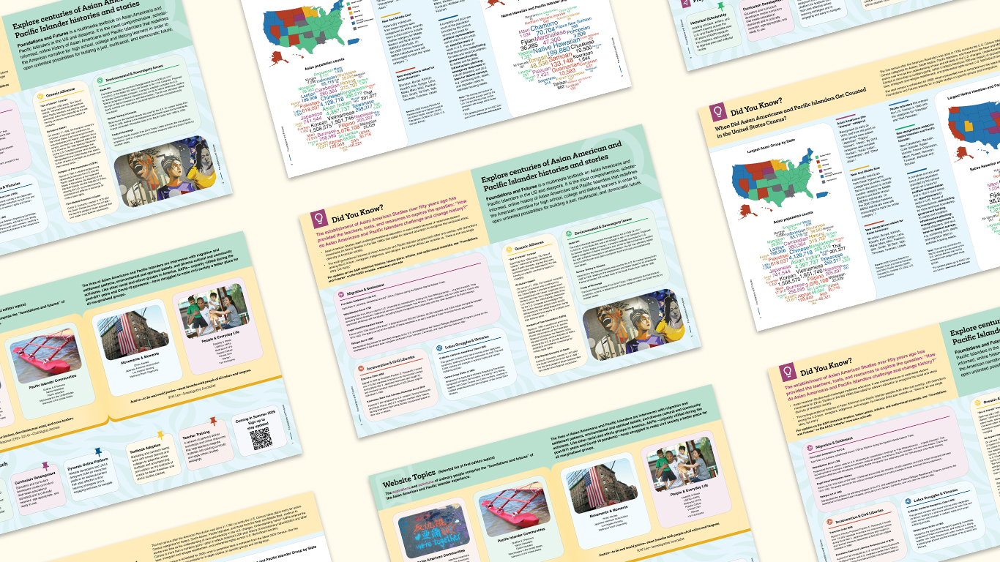
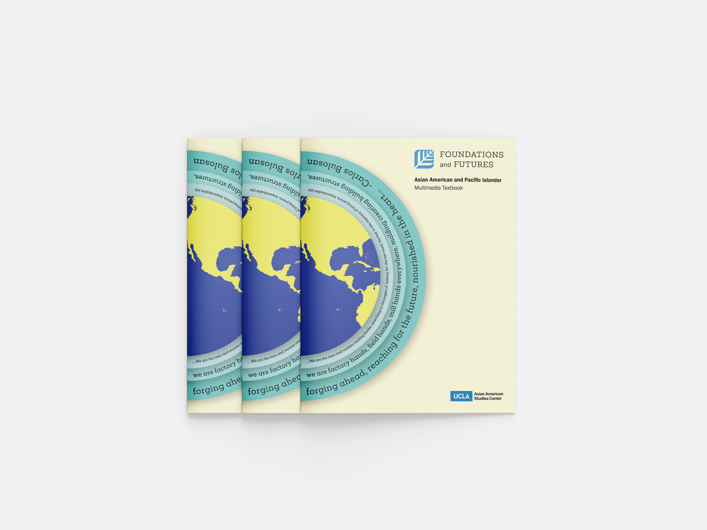
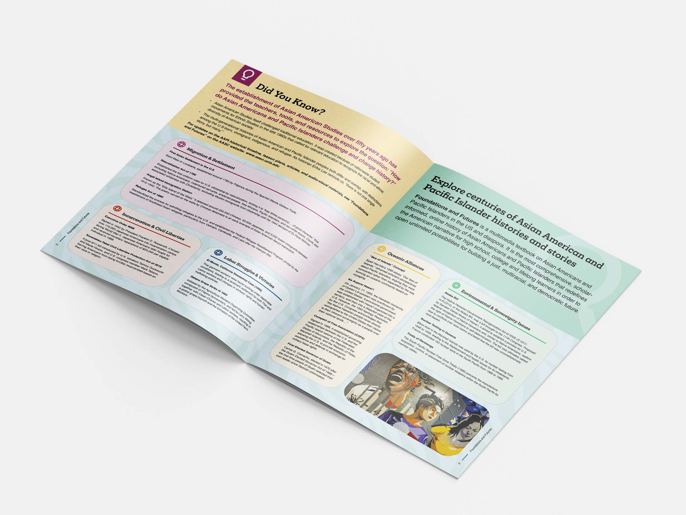
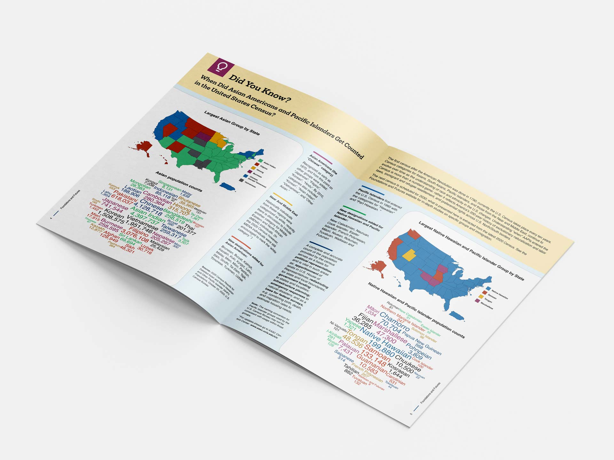
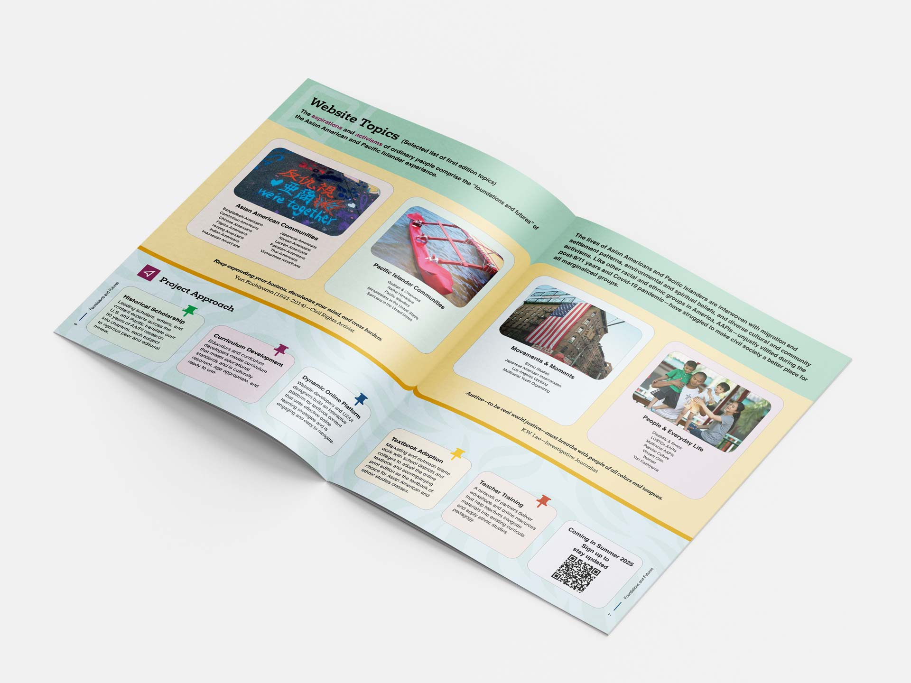
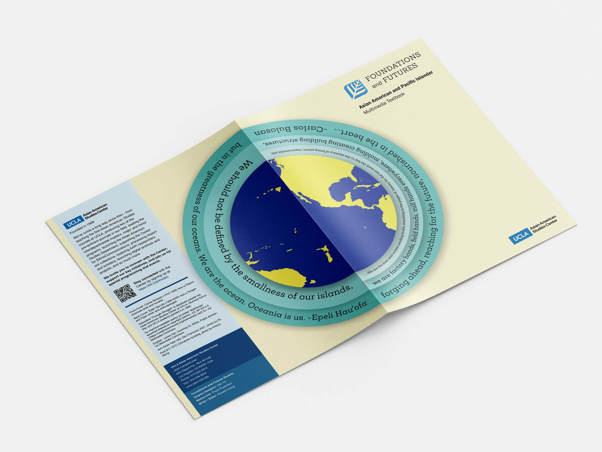

Foundations and Futures Educational Brochure
Foundations and Futures: Asian American and Pacific Islander Multimedia Textbook offers a comprehensive, free online resource combining scholarship, open-access technology, and ethnic studies pedagogy to share AAPI stories. It aims to deepen public understanding, foster historical empathy, and promote a more inclusive American narrative.
Ahead of its official launch in Summer 2025, this guide provides an at-a-glance overview of Asian American and Pacific Islander studies, highlighting some of the key concepts, important moments, and historical figures featured in the textbook. You'll also get a sneak peek at the textbook's unreleased Table of Contents and new insight into Foundations and Futures' project approach.
As the graphic designer of the brochure, I played a key role in shaping its vision and style, ensuring the message is communicated in an effective and appealing way. I collaborate closely with editors and researchers, transforming their ideas and content into visually compelling designs that captivate the audience. From layout to typography, every detail is crafted to bring the content to life, blending creativity with functionality to create a seamless and impactful presentation.
Design



